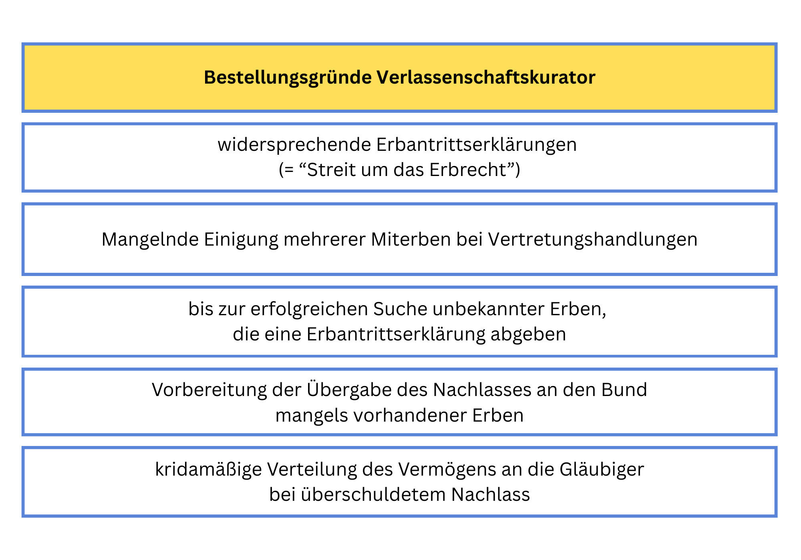

Wann wird ein Verlassenschaftskurator bestellt?
Das österreichische Erbrecht ist vom Grundprinzip geprägt, dass der ruhende Nachlass bis zu seiner rechtskräftigen Einantwortung von den Erben vertreten wird. Gemäß § 810 Abs 1 ABGB ist der Erbe, der sein Erbrecht bei Antritt der Erbschaft hinreichend ausweist (etwa durch ein Testament oder kraft des Abstammungsverhältnisses) berechtigt, den Nachlass zu vertreten. Die Vertretungslosigkeit des Nachlasses besteht sohin idR nur zwischen Tod und Abgabe der Erbantrittserklärungen. In gewissen Konstellationen kann jedoch die Bestellung eines Verlassenschaftskurators notwendig sein, nämlich wenn die ordnungsgemäße Vertretung durch die Erben nicht sichergestellt ist. Erfahren Sie hier mehr, wann dies der Fall ist.
Gründe für die Bestellung eines Verlassenschaftskurators
Vorliegen widersprechender Erbantrittserklärungen
Ist strittig, wer der rechtmäßige Erbe ist (z.B. aufgrund der Anfechtung eines Testaments), so können in einem Verlassenschaftsverfahren widersprechende Erbantrittserklärungen vorliegen. Ein Erbe möchte die Erbschaft aufgrund des Gesetzes antreten, der andere aufgrund eines Testaments. In diesem Fall hat das Gericht eine Art "Zwischenverfahren" zur Feststellung des Erbrechts einzuleiten (§ 161 AußStrG). Hierbei handelt es sich nicht um ein eigenständiges Verfahren, sondern einen Verfahrensabschnitt als Teil des Verlassenschaftsverfahren.
Solange allerdings nicht klar ist, wer der rechtmäßige Erbe ist, kann diesem auch nicht die gesetzliche Vertretungsbefugnis nach § 810 ABGB überlassen werden. Gemäß § 173 Abs 1 AußStrG hat das Verlassenschaftsgericht "erforderlichenfalls" einen Verlassenschaftskurator zu bestellen, wenn ein Verfahren über das Erbrecht einzuleiten ist. Die Formulierung "erforderlichenfalls" indiziert, dass nicht unter allen Umständen ein Kurator zu bestellen ist, etwa wenn keine Rechtsnachteile drohen oder keine Vertretungshandlungen für die Verlassenschaft zu setzen sind (z.B. weil einer der Erben die Betriebskosten der Wohnung weiterbezahlt und sonst keine Vertretungshandlungen notwendig sind). Gerade bei längeren Verfahren zur Feststellung des Erbrechts kann sich allerdings die Bestellung eines Kurators als notwendig erweisen. In vielen Fällen wird daher von Verlassenschaftsgerichten für die Dauer von solchen "Erbstreitigkeiten" ein Kurator bestellt.
Wenn rechtskräftig feststeht, wer der Erbe ist, fällt der Bestellungsgrund für den Verlassenschaftskurator weg, weil der Erbe dann sein Erbrecht hinreichend iSd § 810 ABGB ausgewiesen hat, ihm sohin das Vertretungsrecht zusteht. In diesem Fall hat das Verlassenschaftsgericht den Kurator seines Amtes zu entheben.
Mangelnde Einigkeit mehrerer Miterben
Es kann allerdings auch Situationen geben, in denen das Erbrecht an sich nicht strittig ist, aber mehrere Miterben über gewisse Vertretungshandlungen oder die Art der Vertretung sich nicht einigen können. § 810 Abs 1 ABGB sieht nämlich eine Gesamtvertretungsbefugnis vor, d.h. nur alle Miterben gemeinsam können nach außen wirksam handeln. Um eine Vertretungslosigkeit des Nachlasses durch "Blockaden" einzelner Miterben zu verhindern, ermöglicht das Gesetz auch in diesem Fall gemäß § 173 Abs 1 AußStrG die Bestellung eines Verlassenschaftskurators.
Auch in diesem Fall müssen aber konkrete Vertretungshandlungen für den Nachlass notwendig sein, zumal das Verlassenschaftsverfahren nur der Feststellung des rechtmäßigen Erben dient und daher idR zeitlich absehbar ist. Mit Rechtskraft der Einantwortung führen Miterbengemeinschaften nämlich mangels Abschluss eines Erbteilungsübereinkommens zu einer ideellen Teilung des Nachlasses (z.B. drei Miterben werden jeweils Dritteleigentümer einer Liegenschaft). In diesem Fall entscheiden die Bestimmungen des ABGB über die Vertretungsbefugnis iZm Liegenschaften mehrerer Miteigentümer. Gemäß § 825 ff ABGB gilt hier in Angelegenheiten der ordentlichen Verwaltung das Mehrheitsprinzip (in Angelegenheiten der außerordentlichen Verwaltung können weiterhin einzelne Miteigentümer widersprechen).
Die Bestellung eines Kurators während des Verlassenschaftsverfahrens hat also ihre Rechtfertigung darin, dass während des Verlassenschaftsverfahrens Gesamtvertretungsbefugnis der Erben besteht, sohin einzelne Erben "blockieren" können, während nach Ablauf des Verlassenschaftsverfahrens in vielen Fällen Mehrheitsprinzip gilt. Aus diesem Grund ist ein wegen Uneinigkeit der Erben bestellter Kurator spätestens mit Beendigung des Verlassenschaftsverfahrens zu entheben.
Suche unbekannter Erben
Hatte der Verstorbene weder einen Ehegatten noch Nachkommen in absteigender Linie (d.h. keine Kinder oder Enkelkinder), so ist regelmäßig eine Erbensuche notwendig. Der Notar als Gerichtskommissär hat von Amts wegen alle gesetzlichen Erben ausfindig zu machen. Als gesetzliche Erben können daher auch Tanten, Nichten oder Cousinen in Betracht kommen. Zu diesem Zweck hat der Gerichtskommissär die Erben durch öffentliche Bekanntmachung (= Einschaltung in der Ediktsdatei) aufzufordern, ihre Ansprüche binnen 6 Monaten geltend zu machen (§ 158 Abs 1 AußStrG). Erst nach Ablauf dieser Frist dürfen untätige Erben übergangen werden.
Da sich eine Erbensuche durchaus als langwierig gestalten kann, und es auch länger dauert, bis Erbantrittserklärungen abgegeben werden, kann sich die Bestellung eines Verlassenschaftskurators als notwendig erweisen, wenn Vertretungshandlungen gesetzt werden müssen (z.B. Rückgabe eines Bestandobjekts, das nur laufende Kosten verursacht). Konnte der Gerichtskommissär Erben ausfindig machen, welche die Erbschaft antreten, so fällt der Bestellungsgrund für den Verlassenschaftskurator weg, weil die Erben den Nachlass iSd § 810 ABGB vertreten können.
Konnte der Gerichtskommissär keinerlei gesetzliche Erben ausfindig machen, oder wollen diese das Erbe nicht antreten, so ist der Nachlass an die Finanzprokuratur zu übergeben (= Heimfallsrecht des Bundes). In diesem Fall ist spätestens zu diesem Zeitpunkt - sofern noch nicht geschehen - ein Verlassenschaftskurator zu bestellen (§ 157 Abs 4 AußStrG). In der Praxis veräußert der Verlassenschaftskurator die in der Verlassenschaft vorhandenen Gegenstände, und befriedigt offene Verbindlichkeiten, damit die Republik das Reinvermögen erhält.
Kridamäßige Verteilung
Wenn eine Verlassenschaft überschuldet ist, d.h. mehr Verbindlichkeiten zu befriedigen sind, als Vermögen vorhanden ist, wird in aller Regel keine Erbantrittserklärung abgegeben. Schließlich möchte kaum jemand eine "wertlose" oder gar überschuldete Verlassenschaft erben. In diesem Fall hat eine Überlassung an Zahlungs statt zu erfolgen (§ 154 AußStrG), d.h. das Vermögen ist unter den Gläubigern anteillig aufzuteilen. Ist in der Verlassenschaft nur Bar- oder Kontovermögen vorhanden, wird häufig im Beschluss ausgesprochen, welche Vermögenswerte auf welchen Gläubiger übergehen, insbesondere wenn es nur wenige Gläubiger gibt.
Sind allerdings mehrere Gläubiger vorhanden, oder müssen Vermögenswerte verkauft (z.B. Liegenschaft) oder aufgelöst werden (z.B. mehrere Bankkonten), so bestellt das Verlassenschaftsgericht einen Kurator, der diese Rechtshandlungen setzt, und anschließend dem Gericht einen Verteilungsentwurf übermittelt. Dies wird in der Praxis "kridamäßige Verteilung" genannt. Der Verlassenschaftskurator hat hier gewissermaßen die Funktion eines Insolvenzverwalters ("Mini-Konkurs"). Bei komplexeren Sachverhalten, etwa wenn in der überschuldeten Verlassenschaft Unternehmen oder Gesellschaftsanteile enthalten sind, wird statt der kridamäßigen Verteilung ein Verlassenschaftsinsolvenzverfahren eröffnet, und ein Insolvenzverwalter bestellt. Hierfür ist allerdings das Insolvenzgericht und nicht das Verlassenschaftsgericht zuständig.
Befugnisse und Kosten des Verlassenschaftskurators
Dem Verlassenschaftskurator obliegt die Verwaltung und Vertretung des Nachlasses. Rechtsgeschäfte bzw. Rechtshandlungen gegenüber Dritten (z.B. Abschluss von Verträgen, Einbringung von Klagen) werden daher durch den Verlassenschaftskurator namens der Verlassenschaft vorgenommen.
Sofern es sich um ordentliche Maßnahmen des Wirtschaftsbetriebs handelt (z.B. Rückstellung eines Mietobjekts zur Vermeidung weiterer Kosten), kann der Verlassenschaftskurator diese selbständig vornehmen. Bei außerordentlichen Maßnahmen des Wirtschaftsbetriebs (z.B. Verkauf einer Liegenschaft namens der Verlassenschaft) ist eine Genehmigung des Verlassenschaftsgerichts einzuholen, andernfalls die Maßnahme unwirksam ist. Die Rechtshandlung ist grundsätzlich nur zu genehmigen, wenn dies im Interesse der Verlassenschaft ist (z.B. Verkauf einer Liegenschaft nicht erheblich unter dem Schätzwert oder Einbringung einer aussichtsreichen Klage).
Die konkreten Tätigkeiten des Verlassenschaftkurators hängen vom Bestellungsgrund ab. Bei widersprechenden Erbantrittserklärungen ist die Tätigkeit des Kurators weitgehend auf Vermögenserhaltung bzw. bloße Verwaltung beschränkt. Es würde wohl nicht dem Interesse der Erben entsprechen, wenn der Kurator Liegenschaften zwischenzeitlich verkauft, an denen die Erben später ein Interesse haben. Anderes gilt natürlich, wenn die Verlassenschaft Verbindlichkeiten befriedigen muss, und dies nur durch die Veräußerung von Vermögenswerten möglich ist.
Bei der Vorbereitung der Übergabe des Vermögens an den Bund liegt die Aufgabe des Verlassenschaftskurators idR darin, Vermögenswerte zu liquidieren, also zu veräußern. Selbiges gilt bei der Bestellung zur Vorbereitung einer kridamäßigen Verteilung.
Der Verlassenschaftskurator erhält für seine Tätigkeit eine Entlohnung. In der Regel werden Notare oder Rechtsanwälte zum Verlassenschaftskurator bestellt. Bis zum 2. Erwachsenenschutz-Gesetz (BGBl. I Nr. 59/2017) war die Entlohnung von Kuratoren im österreichischen Zivilrecht generell nicht explizit geregelt. Die zweitinstanzliche Rechtsprechung griff in diesem Zusammenhang oft auf die Entlohnung von Sachwaltern (nunmehr Erwachsenenvertreter) zurück, nämlich 2% des Vermögens pro Jahr und ca. 5-10% der laufenden Einkünfte, was in der Literatur auch teilweise kritisiert wurde. Manche zweitinstanzliche Gerichte sahen die Verlassenschaft im ersten Jahr wie einen Einkommensanfall und sprachen daher im ersten Jahr 5% des Vermögens zu (so etwa das LGZ Wien). Angefangene Jahre wurden entsprechend aliquotiert. Rechtsprechung des OGH existierte nicht, weil der Rechtszug zum OGH in Kostenfragen, und dazu zählt auch die Entlohnung von Kuratoren ausgeschlossen ist.
Seit der Novellierung mit dem 2. Erwachsenenschutz-Gesetz sieht § 283 ABGB eine Bestimmung zur Entlohnung von Kuratoren (d.h. nicht nur Erwachsenenvertretern) vor. Die Bestimmungen der §§ 277 ff ABGB regeln zwar nicht den Verlassenschaftskurator (sondern nur den Abwesenheitskurator, den Kurator für das ungeborene Kind und den Posteritätskurator [= Kurator für noch ungeborene Personen, etwa Nacherben, was in der Praxis kaum Bedeutung hat]). Allerdings wenden einige zweitinstanzliche Gerichte die Entlohnung nach § 283 ABGB in der geltenden Fassung auf den Verlassenschaftskurator sinngemäß an. Die Grundregel sind 5% pro Jahr, allerdings ist eine Reduktion nach unten bei bloß einfacherer Tätigkeit möglich. Genausogut ist eine Erhöhung auf 10% pro Jahr bei besonderer Verdienstlichkeit oder nur kurzer Tätigkeit möglich. Gerade bei einer Tätigkeit des Verlassenschaftskurators im Zusammenhang mit kridamäßigen Verteilungen kann die Entlohnung über 5% pro Jahr liegen, etwa wenn die Höhe des zu verteilenden Vermögens betraglich überschaubar ist. Bei rechtlichen Dienstleitungen hat der Kurator Anspruch auf angemessenes Entgelt (z.B. Zivilprozesse, die ein Rechtsanwalt als Kurator führt, in diesem Fall wird das Entgelt meist nach dem Rechtsanwaltstarif bemessen).
Über die Entlohnung des Kurators entscheidet das Verlassenschaftsgericht spätestens bei der Enthebung, ansonsten kann der Kurator jährlich seine Entlohnung begehren. Der Kurator muss dem Verlassenschaftsgericht spätestens bei seiner Enthebung über seine Tätigkeit Bericht erstatten.
Bei mehrjährigen Streitigkeiten über das Erbrecht können bei der Entschädigung des Kurators relevante Beträge anfallen. Aus diesem Grund empfiehlt es sich - insbesondere als Erbe - den Bestellungsgrund genau zu prüfen, und bei einer unrechtmäßigen Bestellung gegebenenfalls Rechtsmittel zu erheben. Sofern ein Enthebungsgrund vorliegt, sollte ein Antrag auf Enthebung gestellt werden. In der Regel werden Enthebungsgründe ohnehin vom Verlassenschaftsgericht amtswegig wahrgenommen bzw. wird dies von einem pflichtgemäß handelnden Kurator dem Gericht mitgeteilt.
Haben Sie noch Fragen zum Thema Bestellung eines Verlassenschaftskurators?
Eine frühzeitige Beratung schafft Klarheit und hilft, Risiken im Verlassenschaftsverfahren rechtzeitig zu vermeiden. Ich unterstütze Sie bei einer rechtssicheren Einschätzung Ihrer Situation.